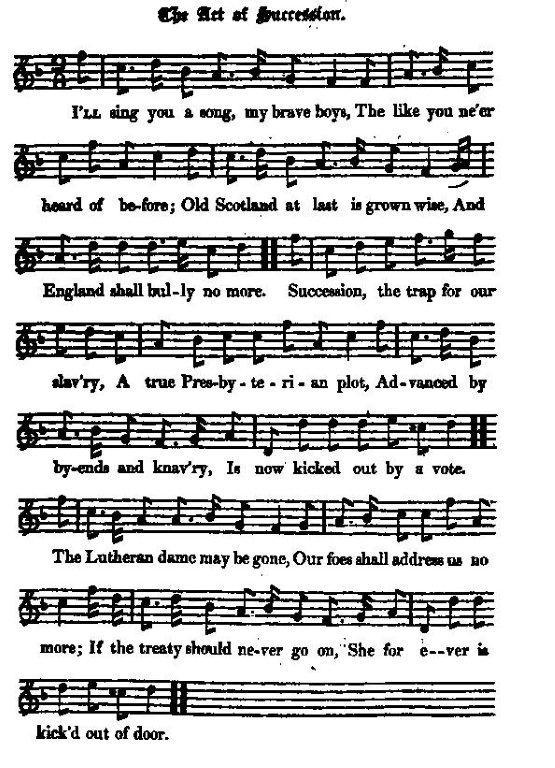
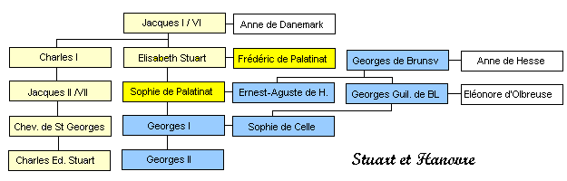
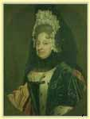

The Act of Succession
L'Acte de succession
Rejection of the Act of Succession by the Scottish Parliament in 1703
Rejet de l'Acte de succession par le Parlement Ecossais en 1703
"from a MS in the Harleian Library (N°7332):" included by
J. Ritson in his "Scotish Songs", vol. II, Class III, N°13, 1794
Tune - Melodie
"The Act of Succession"
from Hogg's "Jacobite Reliques" , vol. I, N° 25, 1819
Sequenced by Christian Souchon

|
The tune is older than the present Jacobite song
|
La mélodie est plus ancienne que ce chant Jacobite
|

|
ON THE ACT OF SUCCESSION [1]
1. I'll sing you a song, my brave boys, The like you ne'er heard of before; Old Scotland at last is grown wise, And England shall bully no more. Succession, the trap for our slavery, A true Presbyterian plot, Advanc'd by by-ends and knavery, Is now kic -ked out by a vote. The Lutheran dame [2] may be gone, Our foes shall address us no more, If the treaty [3] should never go on, She for ever - is kick'd out of door. 2. To bondage we now bid adieu, The English shall no more oppress us; There's something in every man's view That in due time we hope shall redress us. This hundred years past we have been Dull slaves, and ne'er strove yet to mend; It came by an old barren queen, And now we resolve it shall end. But grant the old woman should come, And England with treaties should woo us, We'll clog her before she comes home, That she ne'er shall have power to undo us. 3. Then let us go on and be great, From parties and quarrels abstain; Let us English councils defeat, And Hanover ne'er mention again. Let grievances now be redress'd, Consider, the power is our own; Let Scotland no more be oppress'd, Nor England lay claim to our crown. Let us think with what blood and what care Our ancestors kept themselves free; What Bruce, and what Wallace could dare; If they did so much, why not we ? 4. Let Montrose and Dundee be brought in, As later examples before you; And bold out but as you begin, Like them, the next age will adore you. Here's a health, my brave lads, to the duke [4] then, Who has the great labour begun ; He shall flourish, whilst those who forsook him. To Holland for shelter shall run. Here's a health to those that stood by him, To Fletcher, [5] and all honest men; Ne'er trust the damn'd rogues that belie 'em, Since all our just rights they maintain. 5. Once more to great Hamilton's [4] health, The hero that still keeps his ground; To him we must own all our wealth:— Let the Christian liquor go round. Let all the sham tricks of the court, That so often have foil'd us before, Be now made the country's sport, And England shall fool us no more. Source: Jacobite Minstrelsy, published in Glasgow by R. Griffin & Cie and Robert Malcolm, printer in 1828. |
L'ACTE DE SUCCESSION [1]
1. Je m'en vais vous chanter un chant Comme on n'en entend pas souvent. L'Ecosse enfin s'est réveillée, Par l'Anglais si longtemps brimée. L'Acte de succession, traquenard Ourdi par les Presbytériens, Des prévaricateurs, des roublards Un vote l'a réduit à rien. Allez, Luthérienne, [2] dehors! Un ennemi n'a rien à dire Vite, retirez-vous, dès lors Que le délai pour l'Acte [3] expire. 2. Finie, notre inféodation A l'Anglais et son oppression. Et l'on voit qu'il est temps encor De lui faire payer ses torts. Cent ans déjà qu'esclaves dociles Nous subissons ce sort du fait De la vieille reine stérile. Maintenant nous disons: "Assez!" Si la reine a l'envie subite De nous tenter par des traités, Empêchons-la d'y donner suite Elle ne peut s'y opposer. 3. Nous saurons être généreux, Des querelles nous abstenir. L'Anglais pris à son propre jeu, Qu'Hanovre reste un souvenir! Que l'on répare les torts subis Car l'obtenir nous est possible! L'Ecosse opprimée, c'est fini! Sa couronne n'est pas cessible. Les anciens, pour la liberté Subirent l'épreuve suprême. Si Bruce et Wallace ont osé, Pourquoi ne ferions nous de même? 4. Qu'à Montrose et Dundee l'on pense! Ce sont des exemples récents. Suivez-les donc avec vaillance. Vos fils seront reconnaissants. Au Duc [4], amis, levons nos verres, Lui qui mit l'ouvrage en chantier! Quant à ceux qui l'abandonnèrent, Qu'ils aillent chez les Hollandais! A ceux qui lui portèrent aide, A Fletcher [5] et aux gens de cœur Qui, quoi qu'en disent lâches et tièdes, Défendent nos droits, notre honneur. 5. A Hamilton [4] un toast encore! Imperturbable sur la lice, Son vaillant combat nous honore; Que circule le saint calice! Qu'ils soient, les honteux stratagèmes Dont la cour usa trop longtemps, La risée de tous ici même. La ruse anglaise a fait son temps! (Trad. Christian Souchon(c)2009) |

|
[1] The
Earl of Marchmont
having one day presented an act for settling the succession in the house of Hanover, it was treated with such contempt, that some proposed it might be burnt, and others that it might be sent to the castle, and was at last thrown out of the house by a majority of fifty-seven voices. (Lockhar's Memoirs, p. 60).
 [2] Sophia, Electress-dowager of Hanover , mother of George I. (See Genealogy .)[3] For the union of the two kingdoms . [4] James, Duke of Hamilton : able and spirited, but unsteady. He was killed 15th Nov., 1712, in a duel with Lord Mohun, and, as was suspected, received his death's wound from General Macartney, that nobleman's second; he himself falling at the same time. [5] Andrew Fletcher of Saltoun , a warm and strenuous advocate for republican government, and the natural rights of mankind. He has left a volume of political discourses. Source: "Jacobite Minstrelsy", 1828. |
[1] Le
Comte de Marchmont
ayant un jour proposé un "acte" visant à la dévolution de la succession à la maison de Hanovre, celui-ci fut traité avec mépris, certains proposant même qu'on le brûle ou qu'on le remette au bourreau. Il fut finalement rejeté par la chambre avec une majorité de 57 voix. (Mémoires de Lockhart p.60)
[2] Sophie, Electrice-douairière de Hanovre , mère de George I. (Cf Généalogie .) [3] L' Acte d'Union des deux royaumes. [4] James, Duc d'Hamilton , habile et courageux, mais instable. Il mourut le 15 novembre 1712 lors d'un duel contre Lord Mohun, où il reçut, semble-t-il, une blessure mortelle de la main du général McCartney, le second de ce gentilhomme, lequel tomba mort lui aussi. [5] Andrew Fletcher de Saltoun , s'était fait l'éloquent avocat de la cause républicaine et des droits de l'homme. On lui doit un recueil de discours politiques. Source: "Jacobite Minstrelsy", 1828. |
|
|
|
|
Hogg in a note to this song dates the song from 1704, whereas the "Jacobite Minstrelsy" dates the events from 1703.
Hogg writes: "This is a song of 1704, when the Act of Succession came before the Scottish Parliament, and, as the bard has it, was "kicked out by a vote", though it had passed in the English Parliament, without an amendment, as early as the 12th of June 1700. It created great heats and spirited debates in the Parliament here; and it is not a little singular that the greatest jealousy of English ascendancy should have prevailed in this country, just immediately before these very men were going to yield up the liberties and independency of the nation to their more potent neighbours. By a laudable exertion of spirit, they obtained an Act of Security from the Queen. And the general opinion of the country was, that the two kingdoms were then separated by a law, so as never to be rejoined; and yet the year was scarcely expired before they passed the act for the treaty of union." |
Hogg dans une note relative à ce chant le date de 1704, tandis que le recueil "Jacobite Minstrelsy" date les événements qu'il relate de 1703.
Hogg écrit: "Ce chant date de 1704, année où l'Acte de succession fut discuté devant le Parlement écossais, où, pour reprendre les mots du barde, un scrutin le "réduit à rien", alors qu'il avait été adopté tel quel par le Parlement anglais dès le 12 juin 1700. Cela donna lieu à des débats passionnés au sein de notre parlement. Et il n'est pas peu surprenant de voir ce sursaut de méfiance vis à vis de l'ascendant anglais sur notre pays chez les mêmes hommes qui s'apprêtaient à brader peu après les libertés et l'indépendance de la nation à leurs puissants voisins. Par un louable sursaut de courage, ils obtinrent de la Reine un " Acte de sécurité" . On pensait généralement que cette loi assurait, de façon définitive, la séparation des deux royaumes. Pourtant à peine un an plus tart l'Acte approuvant le traité d'Union était adopté." |
|
|
|